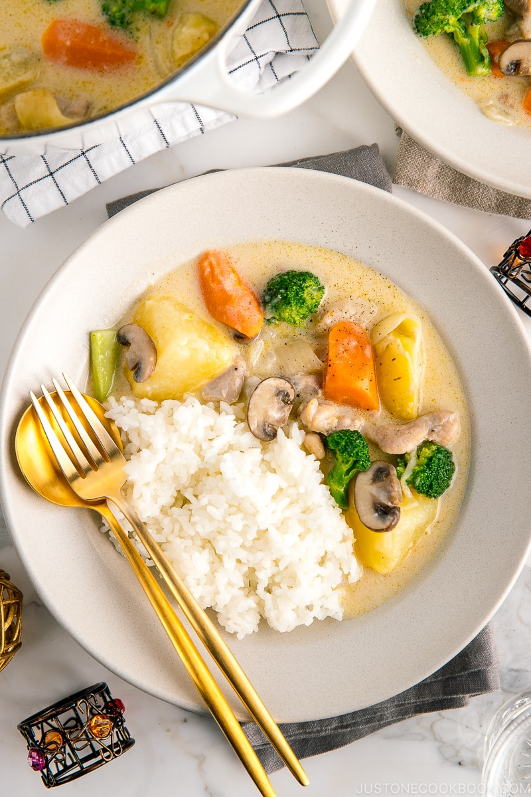

Recipes
cream stew
Ingredients: Meat (chicken legs or bacon or salmon or shrimp or any meat), vegetables (onions, potatoes, carrots, broccoli, mushrooms, or any vegetables) Seasoning: light cream or milk, flour, salt, chopped parsley, pepper
Fry meat and onions in hot oil Add vegetables and sprinkle with flour and mix well Add light cream or milk or both, add salt and black pepper Wait for the food to cook and the milk to collect juices Sprinkle chopped parsley and black pepper
Spare ribs soup

Soak the pork ribs in water and flour for 15 minutes and wash Add water, green onions, ginger, cooking wine, two star anise, and three fragrant leaves to the pork ribs. Bring to a boil over high heat and cook for two minutes. Skim off the foam. Discard water and spices Lightly fry the pork ribs in peanut oil Pour in water, add four-material soup dumplings (Poria, Gorgon seeds, lotus seeds, yam), add sweet corn or sweet carrots, yam or white radish or winter melon, and red dates. Bring to a boil over high heat, then simmer over low heat for more than 1 hour. After cooking, add salt, green onions, and black pepper